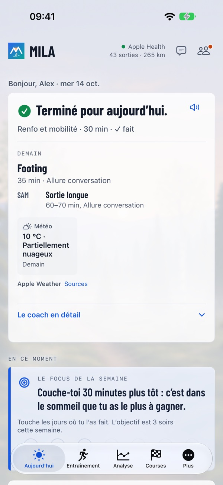
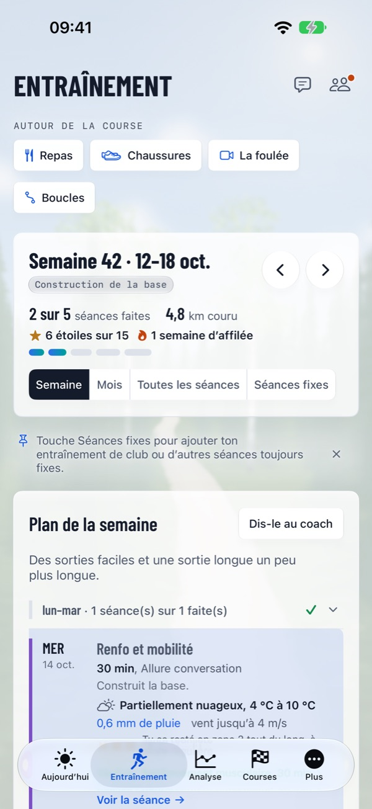
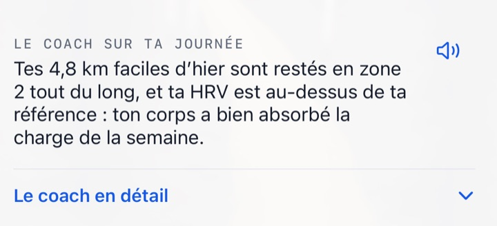

La bonne séance. Le bon jour.
Un coach qui lit ton corps et ta vie chaque matin – jusqu’à l’arrivée.
Mila part de tes propres données, de ta forme du jour et de ton objectif. Chaque matin, l’avis du coach arrive d’abord – prêt, journée normale ou vas-y doucement –, puis la séance du jour telle qu’elle se présente : un entraînement qui s’adapte à ta vie, te rend plus fort vers ton objectif et ne te demande jamais de déchiffrer le moindre graphique.



Plus d’entraînement, moins de casse-tête
La bonne séance chaque jour – selon ta forme et ton quotidien.
Pourquoi Mila est différent
Ta montre mesure. Mila en fait la bonne séance pour toi.
L’esprit Mila
La bonne séance. Le bon jour. Tout dans Mila part de là.
Un coach à portée de main
Chaque matin, tu reçois l’avis du coach et la séance du jour, le meilleur moment pour courir et la tenue selon la météo. Le mot du jour peut t’être lu à voix haute. Quand ta vie change, dis-le au coach avec tes mots, et quand tu te poses une question, demande au coach – les réponses connaissent tes données. En fin de semaine – le dimanche soir ou au plus tard le lundi matin – arrivent le bilan de la semaine et le plan de la semaine suivante.

Mila au poignet
L’app Mila sur l’Apple Watch montre ta journée, enregistre ta course et te demande comment s’est passée la séance. Les autres montres fonctionnent via Apple Health.
Tout ce dont un coureur a besoin
De la première sortie tranquille au jour de la course.
Plan de la semaine et analyse
Un plan de la semaine avec programmes de renforcement et séances que tu peux déplacer. Après la sortie, prévu et réalisé, le parcours coloré selon l’allure et les sorties similaires. Tes tendances, Par rapport à, Records dans le temps et Mon année de course.
Calendrier des courses de Mila
Des courses officielles avec carte, profil d’altitude, ravitaillements et lien vers l’organisateur – ou importe toi-même le parcours (GPX, KML, TCX ou ZIP). Chaque course du calendrier a aussi sa propre page : milacoach.app/fr/courses.
Avant et après la course
Pronostic, plan d’allure selon le profil d’altitude, plan de ravitaillement, Suis-je prêt ?, guide de la course et matin de course. Ensuite, les temps au kilomètre face au plan, l’analyse de course du coach et ton résultat officiel.
La foulée
Filme dans l’app ou choisis une vidéo. Seules des images fixes sont envoyées, visages floutés, et la vidéo ne quitte jamais ton iPhone. Le coach donne des observations et des exercices, les intègre à ton plan et les suit dans le temps.
Chaussures
Le coach estime combien de temps chaque paire te durera – à peu près combien de kilomètres et de semaines à ton rythme. Importe ta liste de chaussures depuis une photo ou un fichier CSV.
Alimentation
Photographie ou décris un repas, et le coach l’estime et le relie à ton entraînement. Corrige-le avec tes mots, affiche-le sans chiffres ou enregistre-le avec Siri.
Partager
Des images de tes sorties et courses avec un fond dans le style de Mila inspiré du lieu, un texte proposé et un mot du coach.
Dans ton calendrier
Les séances du coach dans le calendrier de ton choix, au meilleur moment selon la météo.
Prêt en quelques minutes
Parle au coach de toi et de ton objectif, vois comment il t’a compris et reçois ta première semaine. Essaie Mila Coach gratuitement pendant une semaine.
Fonctionne avec ta montre
Mila lit tes sorties dans Apple Health, tu n’as donc pas besoin d’une montre en particulier.
Tes données restent les tiennes
Les données d’Apple Health sont lues sur ton iPhone ; un résumé est envoyé au coach, après ton accord, avec ce que tu connectes ou envoies (un service de montre connecté, des photos de repas, des images de ta liste de chaussures, des images fixes de vidéos de ta foulée). Ton compte est stocké dans l’UE (Irlande). Les textes du coach sont rédigés par un service d’IA externe aux États-Unis, selon les clauses contractuelles types de l’UE. Mila ne vend jamais tes données et ne s’en sert jamais pour la publicité, et tu peux supprimer ton compte et tout son contenu à tout moment. Mila donne des conseils d’entraînement généraux, pas des conseils médicaux.